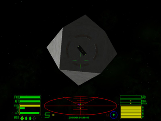
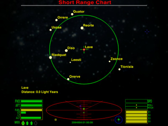
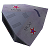

Oolite
Dieser Artikel wurde für die folgenden Ubuntu-Versionen getestet:
Ubuntu 16.04 Xenial Xerus
Zum Verständnis dieses Artikels sind folgende Seiten hilfreich:
 Oolite
Oolite  ist eine anspruchsvolle 3D-Weltraum-Flugsimulation, welche an Elite und Vega Strike erinnert. Als Pilot ist man in seinen Handlungen relativ frei. Man kann Handel mit unterschiedlichen Sonnensystemen treiben, Missionen annehmen, Kopfgelder auf Piraten sammeln und versucht auf diese Weise an genügend finanzielle Ressourcen zu gelangen um das eigene Raumschiff aufzurüsten - oder man entscheidet sich selber für den Werdegang als Pirat! Zu den im Spiel verfügbaren Waffen gehören Laser und Raketen. Oolite kann durch eine Vielzahl von Erweiterungen modifiziert und erweitert werden.
ist eine anspruchsvolle 3D-Weltraum-Flugsimulation, welche an Elite und Vega Strike erinnert. Als Pilot ist man in seinen Handlungen relativ frei. Man kann Handel mit unterschiedlichen Sonnensystemen treiben, Missionen annehmen, Kopfgelder auf Piraten sammeln und versucht auf diese Weise an genügend finanzielle Ressourcen zu gelangen um das eigene Raumschiff aufzurüsten - oder man entscheidet sich selber für den Werdegang als Pirat! Zu den im Spiel verfügbaren Waffen gehören Laser und Raketen. Oolite kann durch eine Vielzahl von Erweiterungen modifiziert und erweitert werden.
|  |
| Raumstation |
|  |
| Short Range Chart |
Installation¶
Folgendes Paket muss installiert [1] werden:
oolite (universe)
oolite-data (universe)
oolite-data-sounds (universe)
oolite-doc (universe, Dokumentation)
 mit apturl
mit apturl
Paketliste zum Kopieren:
sudo apt-get install oolite oolite-data oolite-data-sounds oolite-doc
sudo aptitude install oolite oolite-data oolite-data-sounds oolite-doc
Das Spiel kann nach der Installation über "Anwendungen -> Spiele -> Oolite" oder durch den Aufruf oolite gestartet [2] werden.
Die Pakete von der Projektseite sind aktueller als die Version aus den offiziellen Paketquellen.
Projektseite¶
Zur Installation das Paket in der gewünschten Architektur von oolite.org herunterladen und entpacken [3]. Anschließend die Datei oolite-VERSION.linux-ARCHITEKTUR.run ausführen [4]:
./oolite-VERSION.linux-ARCHITEKTUR.run
S für systemweite und H für die Installation im Homeverzeichnis wählen.
Das Spiel wird - je nach Auswahl - unter ~/GNUstep/Applications/Oolite bzw. /usr/lib/Oolite installiert.
Updates¶
Erweiterungen¶
Für das Spiel stehen eine Vielzahl von Addons als .oxp-Datei (Oolite eXpansion Pack) zur Verfügung. Diese enthalten Schiffe, Raumstationen, Missionen, Musik, Samples, Waffen und vieles mehr. Die Archive entpacken [3] und das Verzeichnis MODNAME.oxp in das entsprechende Verzeichnis, ~/.local/lib/Oolite/AddOns bzw. ~/.Oolite/Add-ons, kopieren. Das Verzeichnis muss ggf. erst angelegt werden. Die Erweiterungen stehen dann für den betreffenden Benutzer zur Verfügung.
| Mods | |
| Name / Link | Beschreibung |
| Backgroundset | Bilder, Sounds und Musik. |
| Deepspace Ships | Schiffsmodelle |
| Explorers' Club OXP | Systemübersicht |
| Famous Planets | HD-Texturen und Musikstücke (46 Planeten) |
| Griff's No Shaders Shipset | Texturen |
| Griff Industries | Schiffsmodelle |
| HUD (Vorschau) | Head-up-Displays |
| Hyperradio | Eigene Musik - oder Hyperradio Musicpacks - im Spiel anhören. |
| Random Hits | Bars und Kopfgeldaufträge |
| Staer9's Shipset | Schiffsmodelle |
| System Redux | Planeten und Monde |
Eine Liste von Seiten mit Erweiterungen ist unter den Links zu finden.
Hinweis:
Einige Erweiterungen enthalten zusätzliche Hinweise zur Verwendung bzw. Installation.
Konfiguration¶
oolite-saves¶
Im Ordner ~/GNUstep/Applications/Oolite/oolite.app kann die xml-Datei oolite-saves mit einem Editor [5] bearbeitet werden:
| oolite-saves | |
| Syntax | Beschreibung |
<key>credits</key><integer>3035800</integer> | Höhe des aktuellen Geldes. |
<key>has_galactic_hyperdrive</key><true/> | Ausrüstung mit vorgestelltem has_ "erwerben". |
Deinstallation¶
Projektseite¶
Zur Deinstallation des Spiel den folgenden Befehl [4] ausführen:
~/GNUstep/Applications/Oolite/./uninstall
Abschließend die Ordner für die Erweiterungen löschen.
Tipps¶
Landen in der Raumstation für Anfänger: jede Station verfügt über eine Boje in Sichtweite der Station: diese wird angeflogen, und dann zur Station gedreht. Langsames zufliegen auf das Tor des Weltraumdocks. Kurz vor der Station muss die Eigenrotation der Station mit manueller Steuerung ausgeglichen werden. Langsam auf die orangenen Lichter zuhalten, bis der Traktorstrahl das Schiff einfängt.
Hat man kein EMC und wird mit Raketen beschossen, lohnt es sich selbst Raketen auf jedes feindliche Ziel abzufeuern - vielleicht hat einer von den Gegnern ein EMC und setzt dieses ein, was 'alle' Raketen in Reichweite zerstört.
Die Gegner werden vom PC zufällig ausgewählt. Das bedeutet, das auch Gegner auftauchen, die stärker sind als man selbst. Flucht kann eine Alternative sein. Nur wer überlebt kann später Geschichten von Heldentaten erzählen.
Niemals zuerst das Feuer eröffnen. Wer zuerst mit einem Kampf beginnt, wird von nichtbeteiligten Zeugen oft als Aggressor identifiziert. Jemanden, der zurück schießt wird selten ein Strick daraus gedreht.
Energiebomben sind Superwaffen. Tatsächlich sind es Massenvernichtungswaffen. Das zünden von Massenvernichtungswaffen in Bereichen, in denen sich unbeteiligte Zivilisten oder Polizeieinheiten aufhalten, wird in der Regel als Terrorismus betrachtet.
Speichern geht immer nur in den Raumstationen - man sollte es tun wann immer es geht!
Manchmal wachsen einem Probleme über den Kopf. Vor allem wenn sie mit großen blauen Kulleraugen gucken. Oder braunen.
| Machtfaktoren / Gegner | |
| Name | Beschreibung |
| Piraten | Piraten gibt es überall. Je weniger Macht die Polizei des betreffenden Planeten hat, desto mehr und desto näher an der Station treten Piraten auf. |
| Kopfgeldjäger | Um diese muss man sich erst dann sorgen machen wenn man ein Strafregister bekommen hat. |
| Thargoiden | Diese Alienrasse ist die einzige, die komplett mit allen anderen bekannten Rassen des Universums Krieg führt. Sie treten als Schwarm auf und sind eine ernste Bedrohung, wenn dieser Schwarm sehr groß ist. |
| GalCop | Die Polizeitruppen. In 'sicheren' Systemen schwer bewaffnet und in der Lage, Piraten im Zaum zu halten. In anderen Gegenden oft nicht mehr als Piraten mit Dienstmarke. |
| Navy | Militär. Tritt gelegentlich in Erscheinung und sollte nicht verärgert werden. |
Handbuch¶
Handbücher sind im Installationsverzeichnis unter ~/GNUstep/Applications/Oolite/doc zu finden.
Tastenkürzel¶
| Tastenkürzel | ||
| Taste(n) | Ort | Funktion |
| F1 | Raumstation | Raumschiff wird aus der Raumstation in den Orbit geschleust |
| F2 | Raumstation | Speichern / Laden / Einstellungen |
| F3 (1 x) | Raumstation | Schiffsausrüstungen |
| F3 (2 x) | Raumstation | Markt für Raumfahrzeuge in der Station |
| F5 (1 x) | Überall | Schiffszustand, Ausrüstung und eigenes Strafregister |
| F5 (2 x) | Raumstation | Ladeliste |
| F6 (1 x) | Überall | Raumkarte "Nahbereich", Zielauswahl für Hyperraumsprung |
| F6 (2 x) | Raumstation | Galaktische Karte / Planeten in dieser Galaxie finden |
| F7 | Raumstation | Daten über den bei F6 markierten Planeten aus dem Schiffscomputer |
| F8 (1 x) | Raumstation | Marktplatz (Pfeiltasten verkauft einzelne Einheiten, Enter kauft bis Laderaum voll / Vorrat verbraucht |
| F8 (2 x) | Raumstation | Missionen (Suche / Brauche / Biete an) |
| F11 | Überall | Vollbild |
| F12 | Überall | Spiel in Fenster |
| F1 | Weltraum | Blick nach vorne |
| F2 | Weltraum | Blick nach hinten |
| F3 | Weltraum | Blick Steuerbord |
| F4 | Weltraum | Blick Backbord |
| A | Weltraum | feuert Laser in Blickrichtung |
| R | Weltraum | Identifizierungssystem (Schiff muss im Fadenkreuz sein) (Sonderzubehör) |
| W | Weltraum | Schub erhöhen |
| S | Weltraum | Schub wegnehmen |
| D | Weltraum | Fracht abwerfen |
| H | Weltraum | Interplanetarer Sprung (Hyperdrive) |
| J | Weltraum | Hyperdrive innerhalb des Sonnensystems |
| Z | Weltraum | Zoom des Weltraumkompasses |
| ↑ | Weltraum | Nase hoch |
| ↓ | Weltraum | Nase runter |
| → | Weltraum | Schiff rotiert nach rechts (seitliches Abrollen) |
| ← | Weltraum | Schiff rotiert nach links (seitliches Abrollen) |
| P | Weltraum | Spiel pausiert |
Infobox¶
| Oolite | |
| Genre: | Weltraum-Flugsimulation |
| Sprache: | |
| Veröffentlichung: | 2006 |
| Publisher: | oolite.org |
| Systemvoraussetzungen: | 1 GHz Prozessor / 1GB RAM |
| Medien: | Download |
| Strichcode / EAN / GTIN: | - |
| Läuft mit: | nativ |


- Erstellt mit Inyoka
-
 2004 – 2017 ubuntuusers.de • Einige Rechte vorbehalten
2004 – 2017 ubuntuusers.de • Einige Rechte vorbehalten
Lizenz • Kontakt • Datenschutz • Impressum • Serverstatus -
Serverhousing gespendet von